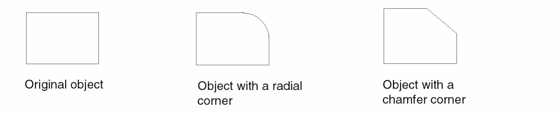

Modifying Corners of a Polygon
Using the Modify Corner command, you can reshape the corner of a polygon to make a rounded or chamfered (45-degree) edge. The Modify Corner command functions in the following ways for different objects.
- ROD objects: Supports ROD polygons and ROD rectangles, except for master rectangles that are part of a path object
- Rectangles: Supports rectangles, and the resultant modified shape is a polygon.
- Blockages and boundaries: Does not support blockage and boundary objects. In pre-selection mode, the command fail, and a message appears in the CIW. In post-selection mode, the command fails to select the blockage and boundary objects.
-
In the layout window, choose Edit – Advanced – Modify Corner.
The Modify Corner form opens. -
Set the type of corner by doing either of the following:
- Select radial. Then set Radius, which is the radius of the curve and Number of Sides, which is the number of segments to create the curve.
- Select chamfer and set Distance.
The maximum value you can set is half the length of the shortest adjacent line segment. The layout editor applies this value or the maximum allowable value for each corner, whichever is shorter. -
On the canvas, click the polygon corner that you want to change. To change more than one corner, press
Shiftand click each additional corner. -
Click OK.

Related Topics
Return to top